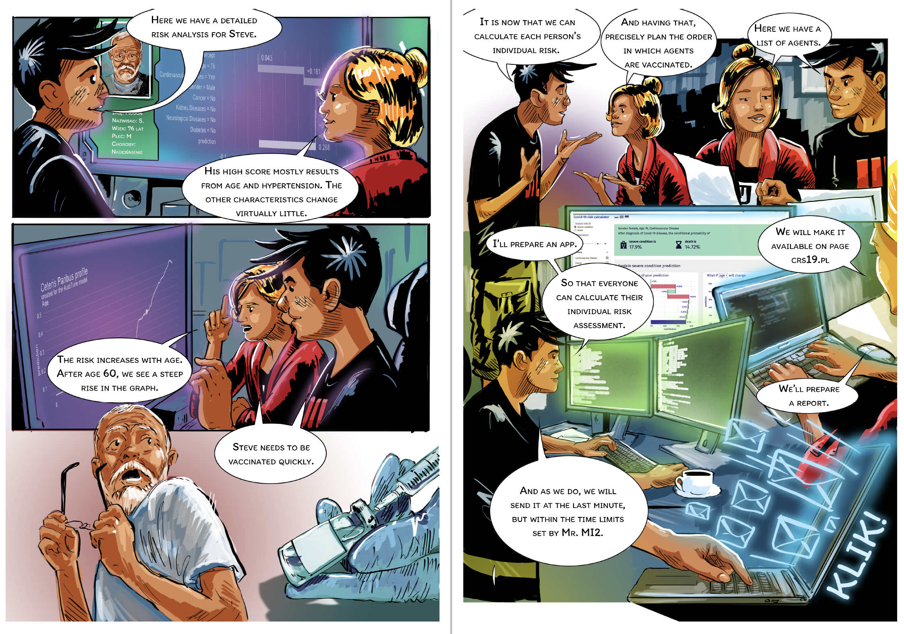
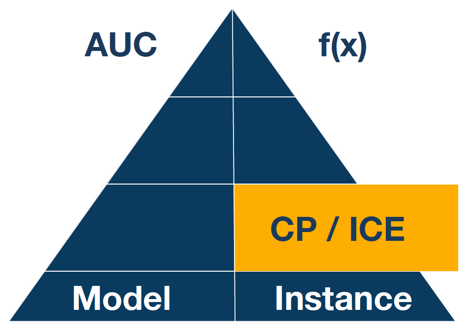
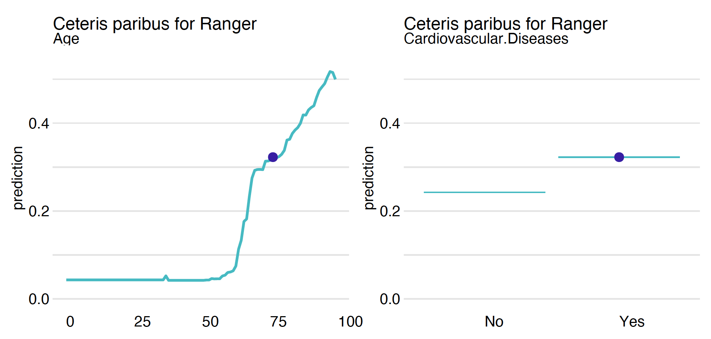
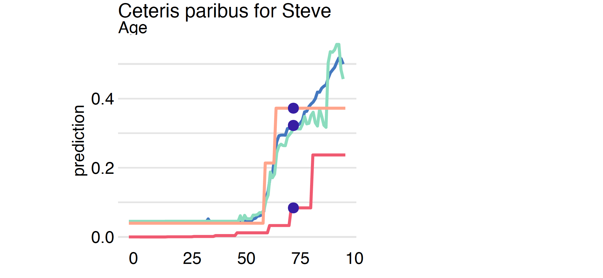

cp_steve = explainer_rfc_tuned.predict_profile(Steve)Step 9. Ceteris Paribus


Ceteris Paribus (CP) is a Latin phrase for “other things being equal”. It is also a very useful technique for an analysis of model behaviour for a single observation. CP profiles, sometimes called Individual Conditional Expectations (ICE), show how the model response would change for a selected observation if a value for one variable was changed while leaving the other variables unchanged.
While local variable attribution is a convenient technique for answering the question of which variables affect the prediction, the local profile analysis is a good technique for answering the question of how the model response depends on a particular variable. Or answering the question of what if…
Python snippets
The predict_profiles() function calculates Ceteris Paribus profiles for a selected model and selected observations. By default, it calculates profiles for all variables, but one can limit this list with the variables vector of variables.
The calculated profiles can be drawn with the generic plot function. As with other explanations in the DALEX library, multiple models can be plotted on a single graph. Although for technical reasons quantitative and qualitative variables cannot be shown in a single chart. So if you want to show the importance of quality variables, you need to plot them separately.
Figure 3 shows an example of a CP profile for continuous variable Age and categorical variable Cardiovascular.Diseases.
cp_steve.plot(variables="Age", show=False)
Age, on the right for the categorical variable Cardiovascular.Diseases. For categorical variables, one can specify how the CP profiles should be drawn by setting the categorical_type argument.The plot function can combine multiple models, making it easier to see similarities and differences.
cp_cdc = explainer_cdc.predict_profile(Steve)
cp_dtc = explainer_dtc.predict_profile(Steve)
cp_rfc = explainer_rfc.predict_profile(Steve)
cp_cdc.plot([cp_rfc, cp_dtc, cp_steve],
variables="Age", show=False)
R snippets
The predict_profiles() function calculates Ceteris Paribus profiles for a selected model and selected observations. By default, it calculates profiles for all variables, but one can limit this list with the variables vector of variables.
cp_ranger <- predict_profile(model_ranger, Steve)
cp_ranger
# Top profiles :
# Gender Age Cardiovascular.Diseases Diabetes
# 1 Female 76.00 Yes No
# 1.1 Male 76.00 Yes No
# 11 Male 0.00 Yes No
# 1.110 Male 0.99 Yes NoThe calculated profiles can be drawn with the generic plot function. As with other explanations in the DALEX library, multiple models can be plotted on a single graph. Although for technical reasons quantitative and qualitative variables cannot be shown in a single chart. So if you want to show the importance of quality variables, you need to plot them separately.
Figure 3 shows an example of a CP profile for continuous variable Age and categorical variable Cardiovascular.Diseases.
plot(cp_ranger, variables = "Age")
plot(cp_ranger, variables = "Cardiovascular.Diseases",
categorical_type = "lines")
Age, on the right for the categorical variable Cardiovascular.Diseases. For categorical variables, one can specify how the CP profiles should be drawn by setting the categorical_type argument.The plot function can combine multiple models, making it easier to see similarities and differences.
cp_cdc <- predict_profile(model_cdc, Steve)
cp_tree <- predict_profile(model_tree, Steve)
cp_tune <- predict_profile(model_tuned, Steve)
plot(cp_cdc, cp_tree, cp_ranger, cp_tune, variables = "Age")
The size of the oscillation can be measured in many ways, by default, it is an area between the CP profile and a horizontal line at the level of the model prediction.
CP profiles are also useful for finding the importance of variables in a model. The more the profiles fluctuate, the more influential the variable is. Such a measure of importance is implemented in the predict_parts function under option type = "oscillations".
predict_parts(model_ranger, Steve, type = "oscillations")
# _vname_ _ids_ oscillations
# 2 Age 1 0.22872998
# 6 Kidney.Diseases 1 0.16371903
# 7 Cancer 1 0.09641507
# 4 Diabetes 1 0.05052652
# 3 Cardiovascular.Diseases 1 0.03984208
# 1 Gender 1 0.03308303
# 5 Neurological.Diseases 1 0.03164090